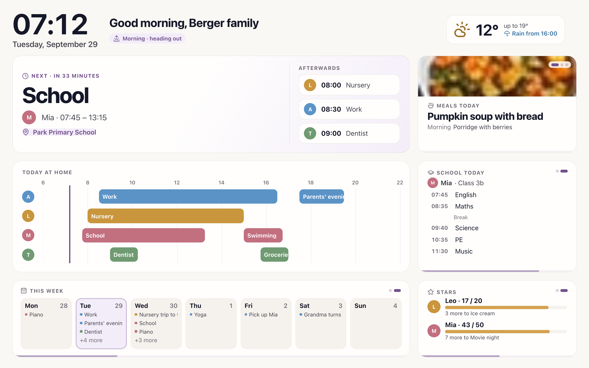

See today clearly
Events, open tasks, birthdays, shopping, reminders, rewards, and activity live in one shared dashboard.
Tribu helps families plan the week, share tasks, keep shopping in sync, remember birthdays, manage meals, and run a read-only shared dashboard from their own server.

Calendar apps, shopping lists, school reminders, chats, and sticky notes all solve one slice. Tribu puts the daily moving parts where the household can see them.
Events, open tasks, birthdays, shopping, reminders, rewards, and activity live in one shared dashboard.
Pair a read-only kitchen tablet or wall screen without leaving a personal account signed in.
CalDAV and CardDAV sync work with iPhone and iPad built-in apps, and with Android through DAV-compatible clients such as DAVx5.
Calendar, tasks, shopping, meals, recipes, school timetables, gifts, rewards, contacts, notifications, and display setup are documented as maintained guides instead of a static screenshot gallery.
The public page keeps the strongest current screenshot and links to the Wiki for detailed workflows, so visitors get a quick proof point without a long gallery.
Meal plans, recipes, shopping lists, and task ownership sit in the same home base, so planning dinner does not become another scattered workflow.
Run Tribu with Docker Compose, published GHCR images, PostgreSQL, and Valkey. Keep family data on your server while the app stays focused on the household using it.
mkdir tribu && cd tribu
curl -LO https://raw.githubusercontent.com/itsDNNS/tribu/main/docker/docker-compose.yml
curl -LO https://raw.githubusercontent.com/itsDNNS/tribu/main/docker/.env.example
cp .env.example .env
# Fill in JWT_SECRET and POSTGRES_PASSWORD
docker compose up -dBefore exposing Tribu to the internet, put it behind HTTPS, set SECURE_COOKIES=true, keep secrets stable, and test backup restore.
After starting Tribu, choose Try demo on the login page to explore realistic household data before setting up your own family workspace.
Try the main workflows with sample data after starting the app.
Install from tagged releases and published GHCR images.
Start with the Wiki for setup, operations, integrations, and troubleshooting.